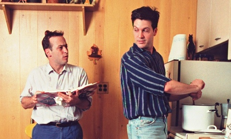

Born December 26, 1956 in Binghamton, New York, David Sedaris is an American humorist, comedian, author, and radio contributor. His essays have been broadcast on NPR, and he has an impressive list of published books, most of which are collections of personal essays and short stories.
Sedaris was discovered in a Chicago club by radio host Ira Glass, which led to his debut on NPR in 1992. From there, his career took off. He published books, wrote essays for Esquire and The New Yorker, and was publicly recognized with various awards.
Sedaris's personal life is artistically and humorously woven into his writing. He writes about his family life, his middle-class upbringing in the suburbs of Raleigh, North Carolina, his Greek heritage, his homosexuality, drug use, education, and travels. He now live in West Sussex, England, with his longtime partner Hugh Hamrick.
"If you aren't cute, you may as well be clever."
- David Sedaris Me Talk Pretty One Day
David Sedaris

David and partner Hugh Hamrick
Sedaris at a book signing
by Hannah Hughes